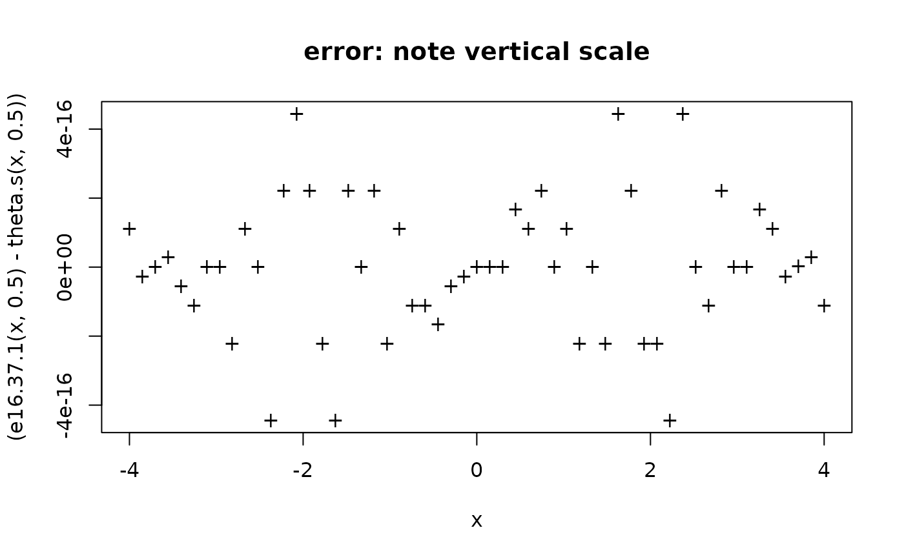
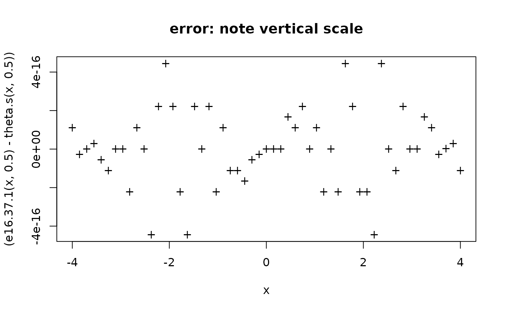

Neville's form for the theta functions
theta.neville.RdNeville's notation for theta functions as per section 16.36 of Abramowitz and Stegun.
theta.s(u, m, method = "16.36.6", ...)
theta.c(u, m, method = "16.36.6", ...)
theta.d(u, m, method = "16.36.7", ...)
theta.n(u, m, method = "16.36.7", ...)Arguments
Details
I reproduce the relevant sections of AMS-55 here, for convenience:
| 16.36.6a | |
| \(\displaystyle\vartheta_s(u) = \frac{2K\vartheta_1(v)}{\vartheta'_{1_{\vphantom{j_j}}}(0)}\) | 16.36.6b |
| \(\displaystyle\vartheta_c(u) = \frac{\vartheta_2(v) }{\vartheta _{2_{\vphantom{j_j}}}(0)}\) | 16.36.7a |
| \(\displaystyle\vartheta_d(u) = \frac{\vartheta_3(v) }{\vartheta _{3_{\vphantom{j_j}}}(0)}\) | 16.36.7b |
| \(\displaystyle\vartheta_n(u) = \frac{\vartheta_4(v) }{\vartheta _{4_{\vphantom{j_j}}}(0)}\) | 16.37.1 |
| \(\displaystyle\vartheta_s(u)=\left(\frac{16q}{mm_1}\right)^{1/6}\sin v\prod_{n=1}^\infty\left(1-2q^{2n}\cos 2v+q^{4n}\right)\) | 16.37.2 |
| \(\displaystyle\vartheta_c(u)=\left(\frac{16qm_1^{1/2}}{m}\right)^{1/6}_{\vphantom{j_j}}\cos v\prod_{n=1}^\infty\left(1+2q^{2n}\cos 2v+q^{4n}\right)\) | 16.37.3 |
| \(\displaystyle\vartheta_d(u)=\left(\frac{mm_1}{16q}\right)^{1/12} \prod_{n=1}^\infty\left(1+2q^{2n-1}\cos 2v+q^{4n-2}\right)\) | 16.37.4 |
(in the above we have \(v=\pi u/(2K)\) and \(q=q(m)\)).
References
M. Abramowitz and I. A. Stegun 1965. Handbook of mathematical functions. New York: Dover
Examples
#Figure 16.4.
m <- 0.5
K <- K.fun(m)
Kdash <- K.fun(1-m)
x <- seq(from=0,to=4*K,len=100)
plot (x/K,theta.s(x,m=m),type="l",lty=1,main="Figure 16.4, p578")
points(x/K,theta.n(x,m=m),type="l",lty=2)
points(x/K,theta.c(x,m=m),type="l",lty=3)
points(x/K,theta.d(x,m=m),type="l",lty=4)
abline(0,0)
 #plot a graph of something that should be zero:
x <- seq(from=-4,to=4,len=55)
plot(x,(e16.37.1(x,0.5)-theta.s(x,0.5)),pch="+",main="error: note vertical scale")

#now table 16.1 on page 582 et seq:
alpha <- 85
m <- sin(alpha*pi/180)^2
## K <- ellint_Kcomp(sqrt(m))
K <- K.fun(m)
u <- K/90*5*(0:18)
u.deg <- round(u/K*90)
cbind(u.deg,"85"=theta.s(u,m)) # p582, last col.
#> u.deg 85
#> [1,] 0 0.0000000
#> [2,] 5 0.2132177
#> [3,] 10 0.4284434
#> [4,] 15 0.6474349
#> [5,] 20 0.8714648
#> [6,] 25 1.1011162
#> [7,] 30 1.3361236
#> [8,] 35 1.5752683
#> [9,] 40 1.8163399
#> [10,] 45 2.0561678
#> [11,] 50 2.2907234
#> [12,] 55 2.5152906
#> [13,] 60 2.7246942
#> [14,] 65 2.9135742
#> [15,] 70 3.0766867
#> [16,] 75 3.2092122
#> [17,] 80 3.3070473
#> [18,] 85 3.3670599
#> [19,] 90 3.3872870
cbind(u.deg,"85"=theta.n(u,m)) # p583, last col.
#> u.deg 85
#> [1,] 0 1.000000
#> [2,] 5 1.016639
#> [3,] 10 1.066184
#> [4,] 15 1.147516
#> [5,] 20 1.258756
#> [6,] 25 1.397253
#> [7,] 30 1.559573
#> [8,] 35 1.741516
#> [9,] 40 1.938152
#> [10,] 45 2.143900
#> [11,] 50 2.352647
#> [12,] 55 2.557921
#> [13,] 60 2.753098
#> [14,] 65 2.931653
#> [15,] 70 3.087425
#> [16,] 75 3.214899
#> [17,] 80 3.309465
#> [18,] 85 3.367648
#> [19,] 90 3.387287
#plot a graph of something that should be zero:
x <- seq(from=-4,to=4,len=55)
plot(x,(e16.37.1(x,0.5)-theta.s(x,0.5)),pch="+",main="error: note vertical scale")

#now table 16.1 on page 582 et seq:
alpha <- 85
m <- sin(alpha*pi/180)^2
## K <- ellint_Kcomp(sqrt(m))
K <- K.fun(m)
u <- K/90*5*(0:18)
u.deg <- round(u/K*90)
cbind(u.deg,"85"=theta.s(u,m)) # p582, last col.
#> u.deg 85
#> [1,] 0 0.0000000
#> [2,] 5 0.2132177
#> [3,] 10 0.4284434
#> [4,] 15 0.6474349
#> [5,] 20 0.8714648
#> [6,] 25 1.1011162
#> [7,] 30 1.3361236
#> [8,] 35 1.5752683
#> [9,] 40 1.8163399
#> [10,] 45 2.0561678
#> [11,] 50 2.2907234
#> [12,] 55 2.5152906
#> [13,] 60 2.7246942
#> [14,] 65 2.9135742
#> [15,] 70 3.0766867
#> [16,] 75 3.2092122
#> [17,] 80 3.3070473
#> [18,] 85 3.3670599
#> [19,] 90 3.3872870
cbind(u.deg,"85"=theta.n(u,m)) # p583, last col.
#> u.deg 85
#> [1,] 0 1.000000
#> [2,] 5 1.016639
#> [3,] 10 1.066184
#> [4,] 15 1.147516
#> [5,] 20 1.258756
#> [6,] 25 1.397253
#> [7,] 30 1.559573
#> [8,] 35 1.741516
#> [9,] 40 1.938152
#> [10,] 45 2.143900
#> [11,] 50 2.352647
#> [12,] 55 2.557921
#> [13,] 60 2.753098
#> [14,] 65 2.931653
#> [15,] 70 3.087425
#> [16,] 75 3.214899
#> [17,] 80 3.309465
#> [18,] 85 3.367648
#> [19,] 90 3.387287